Developing a LiDAR-based ecological analysis system for understanding forest structure, canopy complexity, habitat variability, and spatial distribution of trees within the shola forests of Kodaikanal using handheld LiDAR and ecological ground-truth measurements.
This project focuses on analyzing forest habitat structure using handheld LiDAR data integrated with ecological field observations. The study includes canopy height modelling, vegetation density analysis, habitat openness assessment, GBH estimation, and spatial mapping of trees within Bombay Shola, Kodaikanal.
High-resolution 3D forest structure visualization.
Ground-truth habitat and vegetation measurements.
Canopy structure and habitat variability assessment.
Habitat photograph showing canopy condition and vegetation structure.
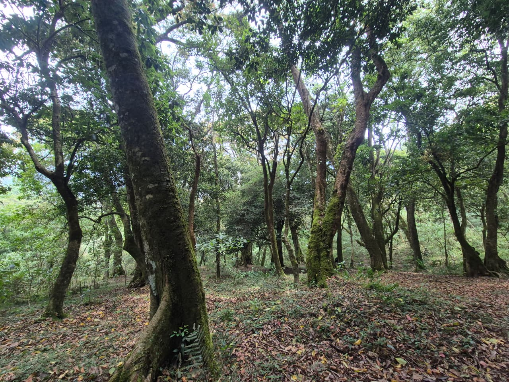
Field team involved in LiDAR scanning and ecological surveys.
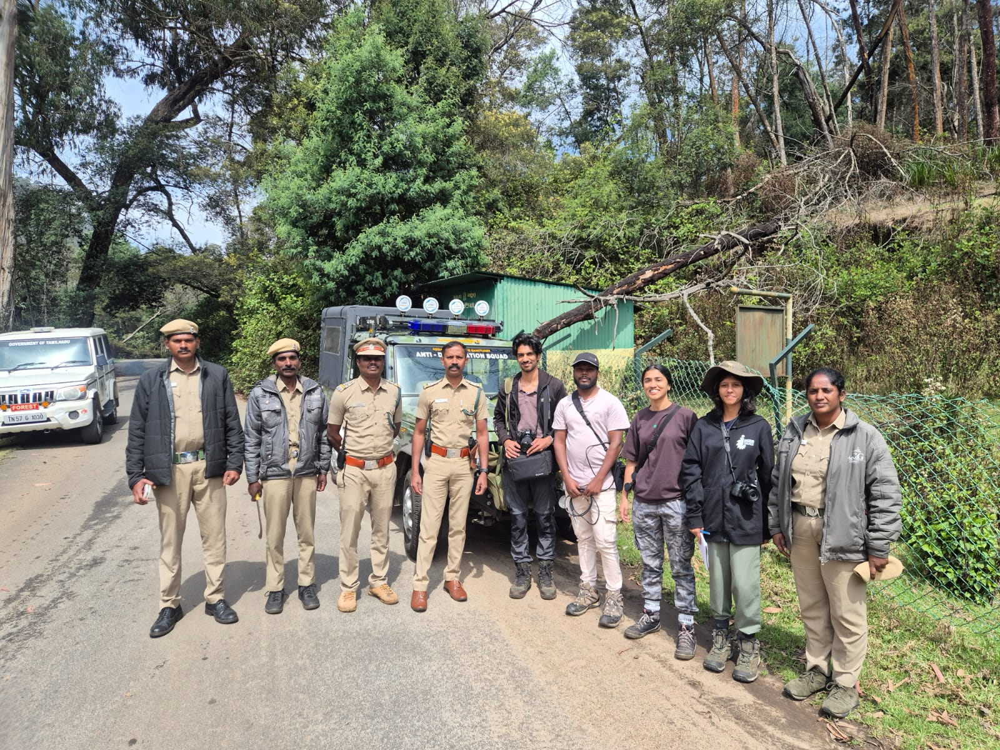
Visualization of canopy layering and vertical forest complexity.
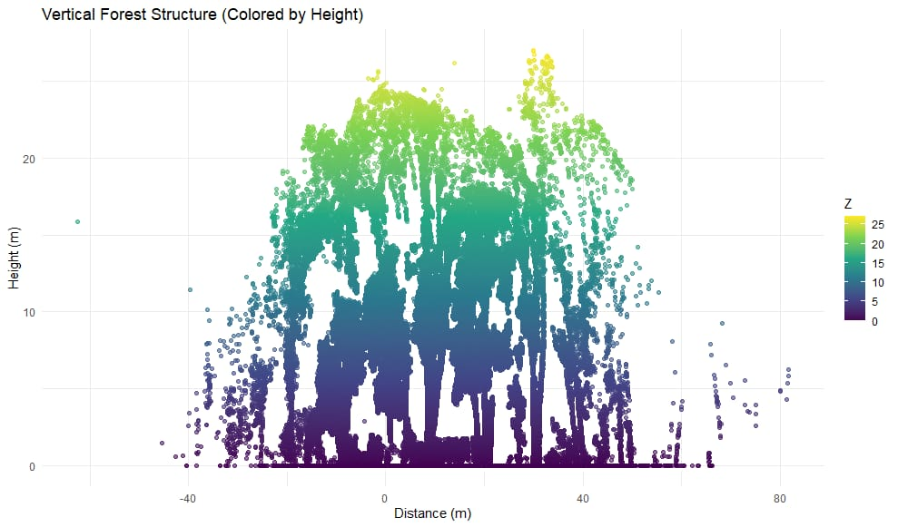
Handheld LiDAR setup during field data collection.
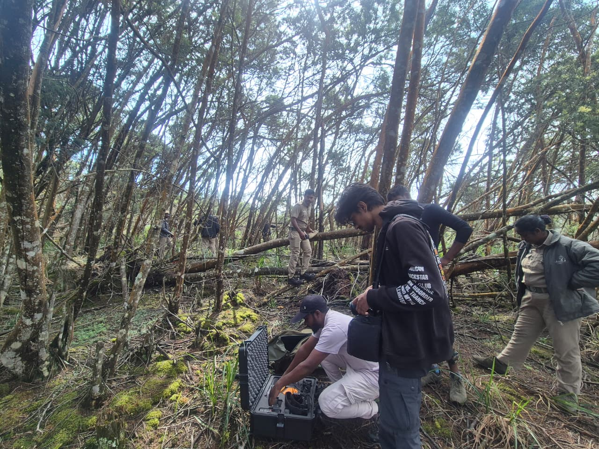
Ground-truth GBH measurements during field survey.
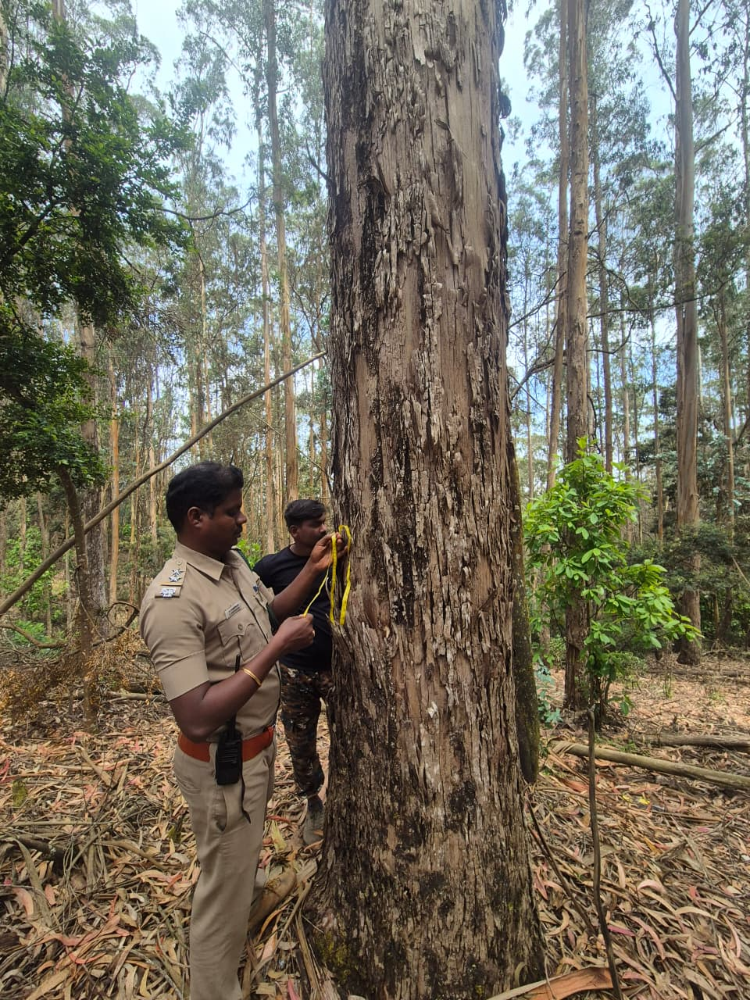
Ecological fieldwork and habitat assessment in Kodaikanal.
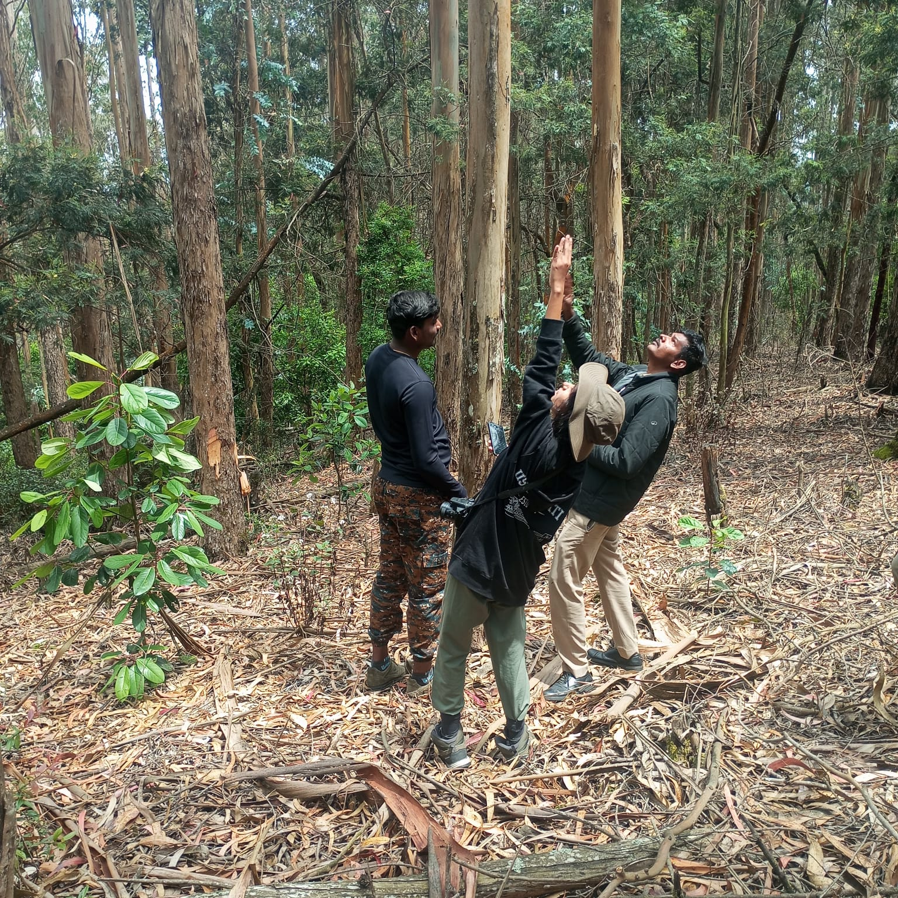
Habitat observations and forest measurements with TNFD.
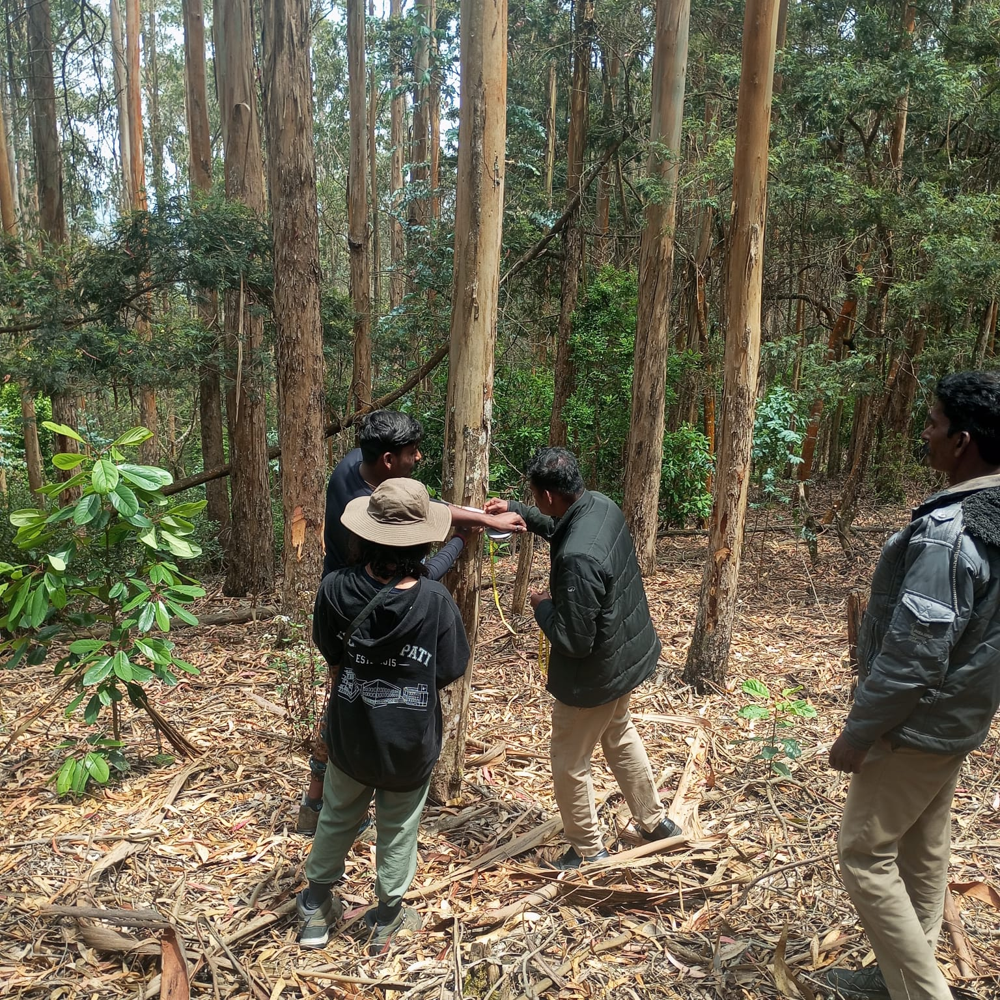
Individual tree measurements for ecological validation.
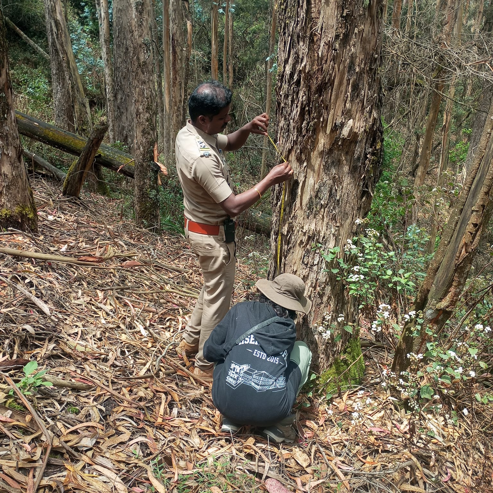
LiDAR-derived canopy height model representing forest structure.
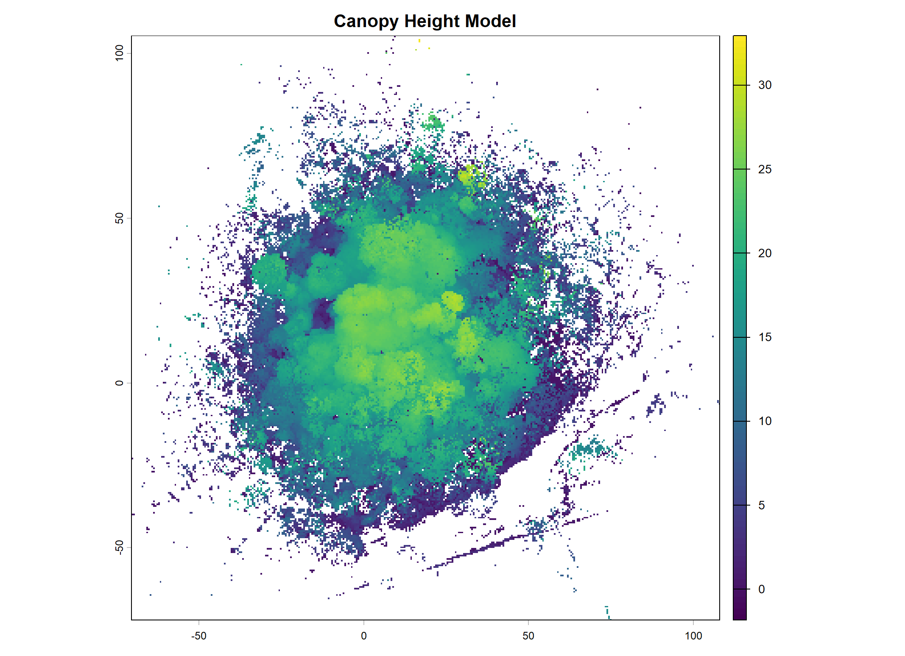
Distribution of GBH measurements collected during field assessment.
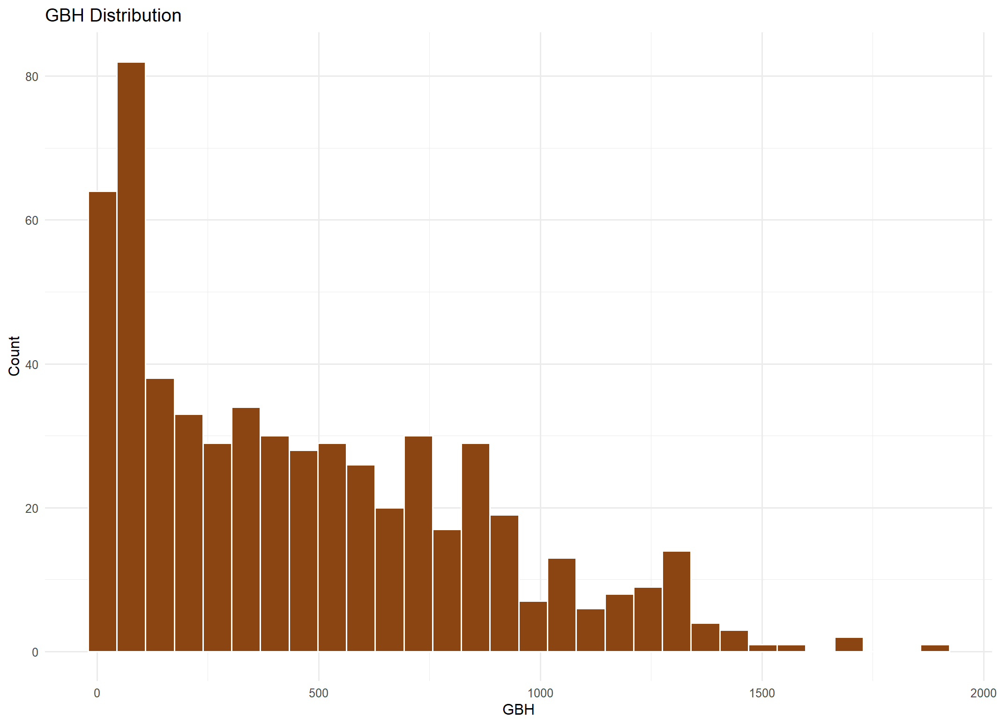
Relationship between tree height and GBH observed during habitat analysis.
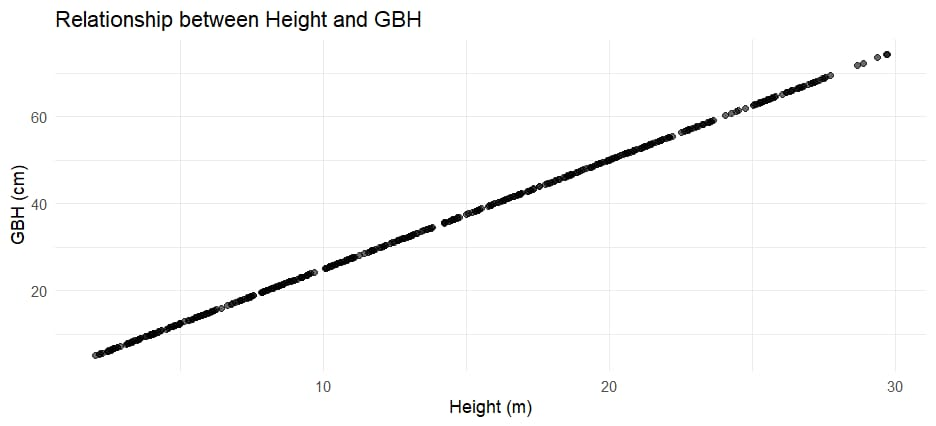
Spatial distribution map showing individual tree positions.
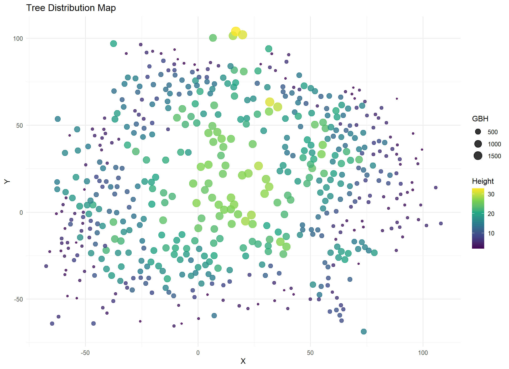
Distribution of tree heights derived from LiDAR analysis.
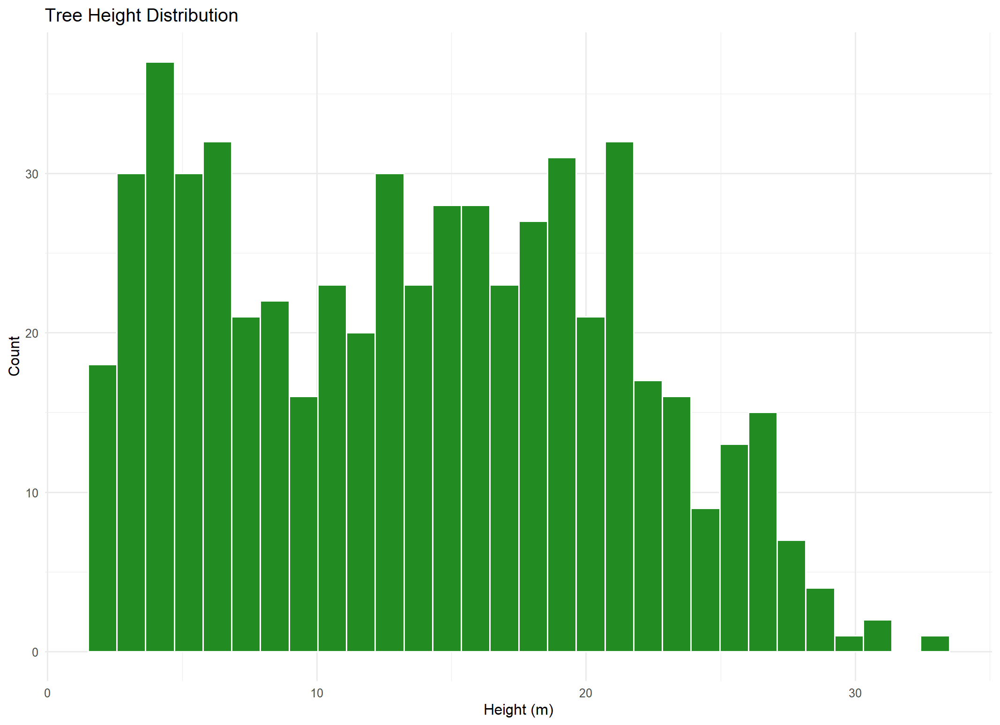
Spatial mapping of trees identified during habitat analysis.
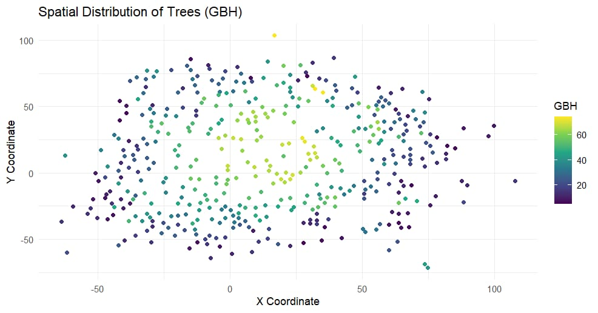
LiDAR-derived vegetation density analysis highlighted differences in canopy closure and forest complexity across the study site.
Canopy structure analysis revealed variation in tree height and vertical layering within the forest.
Habitat openness analysis identified canopy gaps and variation in forest cover across the study area.
Ground observations supported the interpretation of LiDAR-derived habitat structure and canopy patterns.
This project demonstrates the usefulness of handheld LiDAR for ecological habitat assessment and forest structure analysis. Integrating LiDAR data with ecological field measurements provided detailed insights into canopy structure, vegetation density, habitat openness, and spatial variability within the shola forests of Kodaikanal.